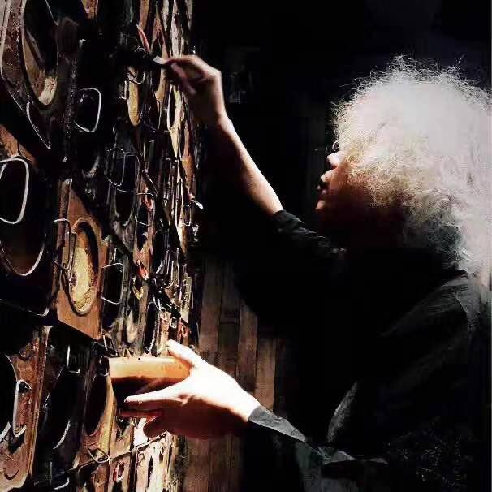
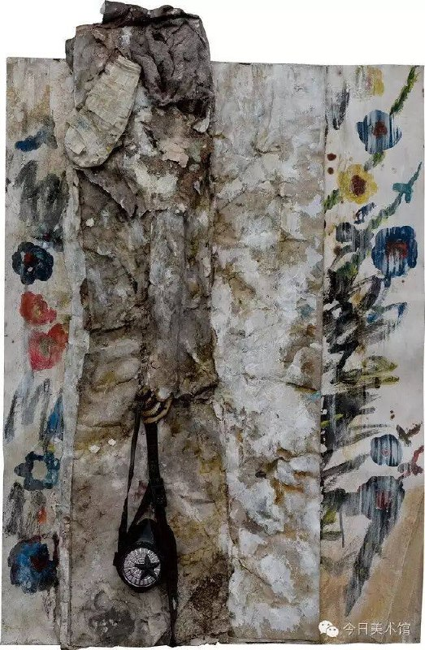
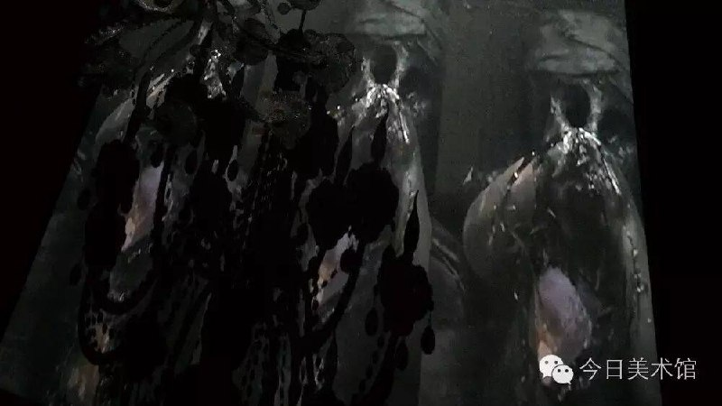
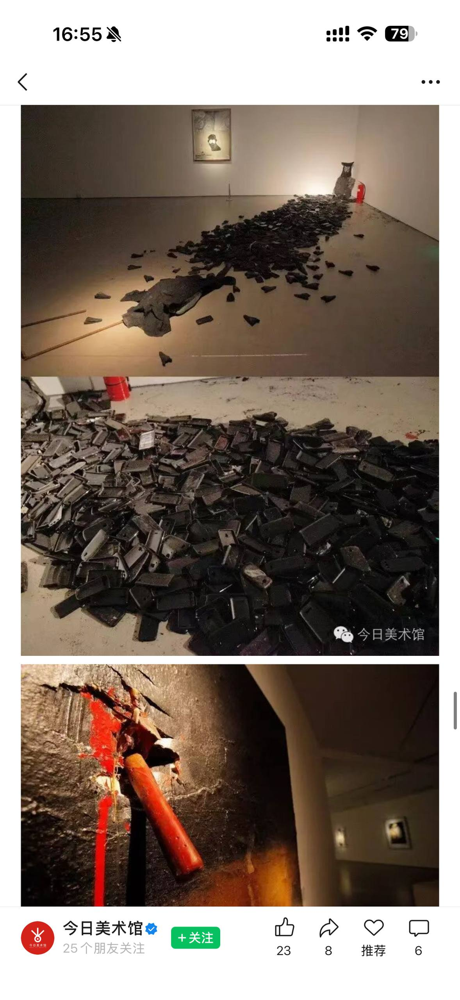
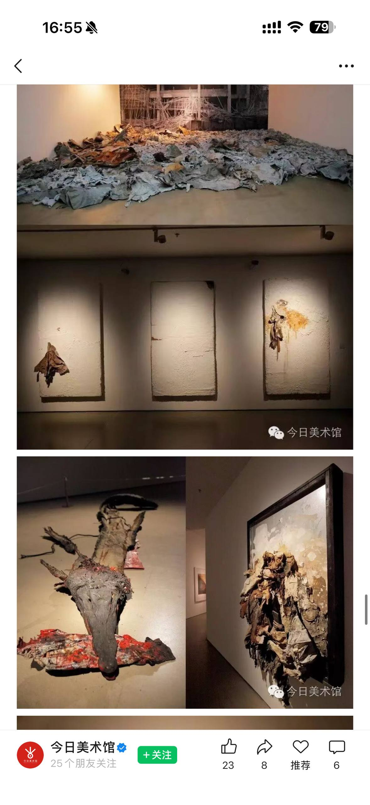

Yu Qiucheng
关于 About

余秋呈，艺术家、精神分析师，现居广州。七岁起师从国画家邓少峰，习画六年；1997年师从湖北美院油画系主任胡朝阳；2005年后追随尚扬先生。
他以「现成品的二度绘画性」为核心展开创作——在工厂废弃纸板上的偶发图像中发现绘画性，将铁丝网架、塑料残片、有机玻璃等工业现成物重新组合为装置绘画。近年将实践延伸至精神分析领域，在广州白云心理医院设立工作室，倾听住院者的讲述，从收集物质的边角料转向收集精神的边角料。
Yu Qiucheng is an artist and psychoanalyst based in Guangzhou. He began studying traditional Chinese painting under Deng Shaofeng at age seven; trained under Hu Chaoyang, chair of Oil Painting at the Hubei Institute of Fine Arts from 1997; and followed the mentorship of Shang Yang from 2005.
His practice centers on "the secondary painterliness of readymades" — discovering painterly qualities in the incidental images left on discarded factory cardboard, recombining wire mesh, plastic fragments, and plexiglass into installation paintings. In recent years he has extended his work into psychoanalysis, establishing a studio at Guangzhou's Baiyun Psychiatric Hospital, shifting from collecting material offcuts to gathering spiritual ones.
当我们讨论艺术的时候，反而是要清除艺术。
每个人的生命都是艺术。额头上的皱纹是屋漏痕，心理的感受是屋漏痕，工厂围墙上十几年的生产痕迹也是屋漏痕。不完美才是另一种完美。
When we discuss art, what we really need is to strip art away.
Every life is art. The wrinkles on a forehead are traces of time; the wounds of the psyche are traces; the decades of production residue on a factory wall are traces. Imperfection is another form of perfection.
作品 Selected Works

80cm×120cm, 综合材料Mixed Media, 2016

综合材料 Mixed Media

今日美术馆，北京 Today Art Museum, Beijing, 2016
展览与项目 Exhibitions & Projects
文章发表于《天涯》杂志第1期
Essay published in Tianya Magazine, Issue 1
中国美术学院 · 热带病艺术研究所
China Academy of Art · Tropical Disease Art Institute
北京今日美术馆 · 策展人：朱其
Today Art Museum, Beijing · Curated by Zhu Qi

实践 Practice
在广州白云心理医院设立工作室，以拉康式精神分析的方法介入社会现场。充当住院者的「耳朵」——在讲述与聆听之间，建立不可思议的移情关系。从物质的边角料到精神的边角料。
Working from a studio at Guangzhou's Baiyun Psychiatric Hospital, he practices Lacanian listening — becoming the ear for those whose voices society has excluded. Between telling and hearing, an extraordinary transference takes shape. From material offcuts to spiritual ones.
在癌症康复营中开展绘画治疗课程，融合侘寂美学与佛教观想。引导参与者通过身体感知作画，在撕裂与重组中完成身心净化。侘——贫穷、无常；寂——孤独、寂静。不完美才是另一种完美。
Leading painting therapy in cancer recovery programs, integrating wabi-sabi aesthetics with Buddhist visualization. Participants create through bodily awareness — tearing and reassembling toward purification. Wabi: poverty, impermanence. Sabi: solitude, stillness. Imperfection as perfection.